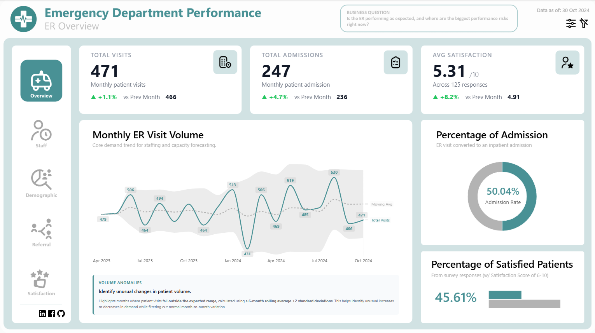
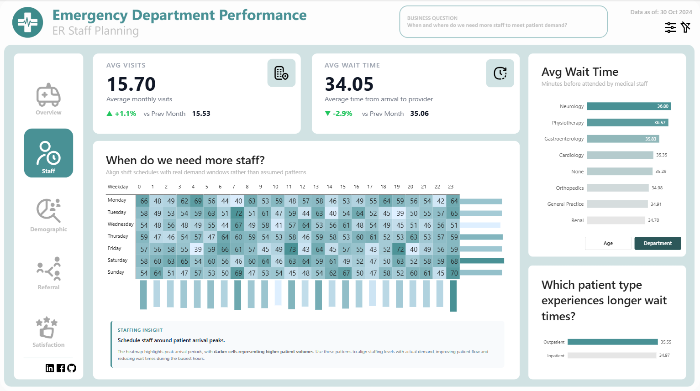
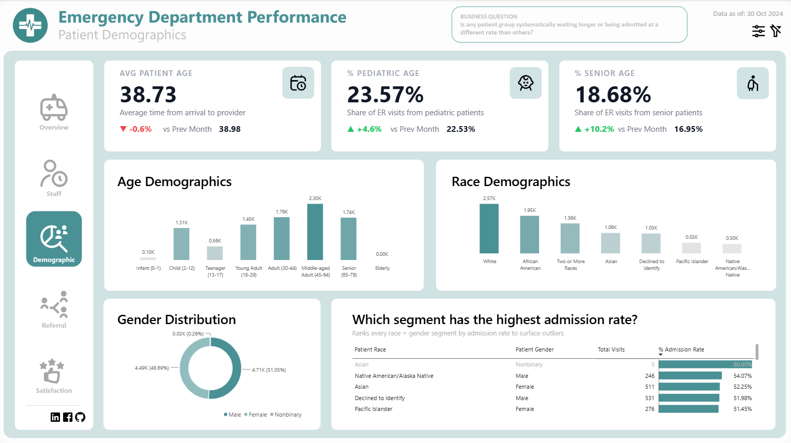
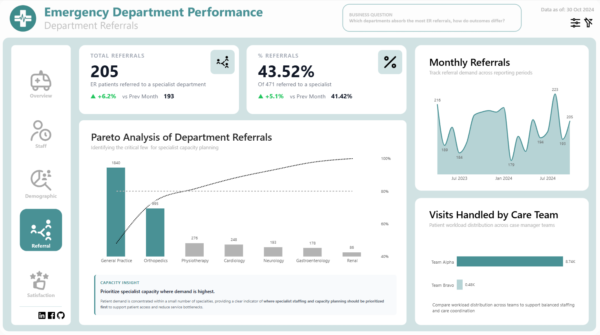
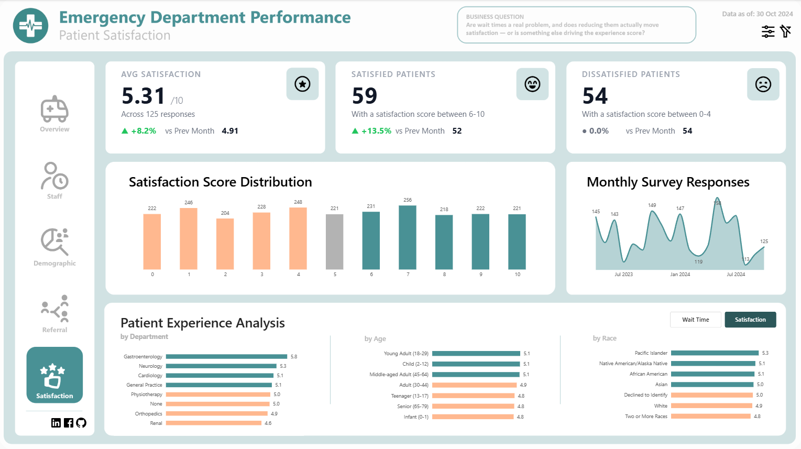

Tracks ER visits, admission rates, patient demographics,
referral departments, and satisfaction metrics to help healthcare
leaders improve operational performance and patient outcomes.
Overview
This five-page Power BI dashboard answers the operational questions hospital administrators actually lose sleep over — from identifying where the biggest performance risks are right now, to when and where staffing gaps exist, to whether any patient group is being systematically underserved. Built on ER encounter data, it goes beyond surface-level volume reporting to surface counterintuitive findings: wait time improved, but the truly dissatisfied patient count didn't move; the department with the shortest wait has the lowest satisfaction score; and one care team carries a workload nearly 18 times larger than the other. Each page is anchored to a specific business question, making this a decision-support tool — not a reporting deck.

Business Question
Emergency departments generate enormous operational data — visits, admissions, wait times, referrals, satisfaction scores — but the relationships between these metrics are rarely straightforward. A drop in average wait time does not automatically translate to a drop in dissatisfied patients. A spike in senior patient share (+10.2% MoM) has staffing and care capacity implications that a simple headcount view won't reveal. And a care team workload imbalance nearly 18× between teams is a burnout and retention risk hiding inside an aggregate average. Without a structured, multi-dimensional view that challenges first assumptions rather than confirming them, ER leadership makes resource and policy decisions based on instinct — and the data in this dashboard pushed back on intuition at almost every page.
Key Insights & Features
- ER Overview Page — Operational Baseline with Anomaly Detection
-
Tracks Total Visits (471, +1.1% MoM), Total Admissions (247, +4.7% MoM), Avg Satisfaction (5.31, +8.2% MoM), Admission Rate (50.04%), and % Satisfied Patients (45.61%). A monthly volume trend line with a 6-month rolling average ±2 standard deviation band flags volume anomalies — identifying unusual demand spikes that fall outside expected variation and require staffing response.
- Staff Planning Page — Arrival Heatmap for Shift Optimization
-
A 7-day × 24-hour patient arrival heatmap reveals that demand is not evenly distributed — Friday mornings and Saturday nights show the sharpest peaks — giving shift planners the data to realign rosters around actual arrival patterns rather than assumed ones. Avg Wait Time (34.05 min, -2.9% MoM) is broken down by department and patient type (Outpatient: 35.55 min vs. Inpatient: 34.97 min), with Neurology (36.80 min) and Physiotherapy (36.57 min) as the highest-wait departments.
- Patient Demographics Page — Equity & Capacity Risk Signals
-
Avg Patient Age (38.73), % Pediatric (23.57%, +4.6% MoM), and % Senior (18.68%, +10.2% MoM) tracked with MoM variance. Age and race demographic bar charts, a gender donut (Male 51.05%, Female 48.69%, Nonbinary 0.26%), and a race × gender admission rate matrix surface that Asian Nonbinary patients show an 80% admission rate — an outlier with implications for both care equity review and capacity planning for specific demographic needs.
- Department Referrals Page — Pareto Concentration & Workload Imbalance
-
Total Referrals (205, +6.2% MoM), Referral Rate (43.52%), and a Pareto chart confirm that General Practice (1,840) and Orthopedics (995) absorb the critical majority of ER referrals — two departments where specialist capacity investment delivers maximum throughput impact. A care team workload comparison reveals Team Alpha handling 8.74K visits versus Team Bravo's 0.48K — an 18× imbalance that flags a near-term burnout and retention risk requiring immediate rebalancing.
- Patient Satisfaction Page — The Insight That Challenged the Narrative
-
Avg Satisfaction (5.31/10), Satisfied Patients (59, +13.5% MoM), and Dissatisfied Patients (54, 0.0% change) tell a more complex story than the headline improvement suggests — the gain came from shifting lukewarm patients, not from recovering the truly unhappy. Satisfaction by department reveals that Renal has the shortest wait yet the lowest score, while Gastroenterology has a longer wait yet the highest score — disconfirming wait time as the primary satisfaction driver and pointing toward communication and care quality as the real levers.
- Analytical Approach
-
Descriptive (volume and KPI baselines), diagnostic (wait time vs. satisfaction disconfirmation, demographic admission rate outliers), operational (heatmap-driven shift planning), and equity-aware (demographic segmentation by admission rate and race × gender cross-tab) — across five purpose-built pages, each anchored to a distinct, named business question visible in the dashboard header.





| Tool | Usage |
|---|---|
| Power BI | Dashboard design, report pages, interactivity |
| DAX | KPI calculations, YoY/MoM comparisons, margin metrics |
| Power Query (M) | Data transformation and modeling |
| Statistical Bands | 6-month rolling average ±2 SD anomaly detection for volume outliers |
| Pareto Analysis | Referral concentration logic to identify critical few departments |
Impact & Value
This dashboard is built to change decisions, not just inform them. Rebuilding shift schedules around the Friday-morning and Saturday-night arrival peaks directly reduces overtime costs and ER bottlenecks. Investigating Renal's satisfaction score as a communication problem — not a wait-time problem — points leadership toward a targeted quality intervention that a blunt "reduce all wait times" directive would miss entirely. Rebalancing Team Alpha's 18× workload advantage over Team Bravo is a retention intervention disguised as a scheduling fix. And preparing General Practice and Orthopedics for growing referral concentration prevents downstream specialist bottlenecks before they become patient access failures. The dashboard's greatest value is that it consistently produces the second answer — the one that survives contact with the actual data after the first, more obvious answer fails to hold up.
Let's Work Together!
I help businesses turn raw data into actionable insights, dashboards, and data-driven strategies.
- Data Analysis & Visualization
- Power BI & Dashboard Development
- Business Intelligence Solutions
Phone
+63 956-175-9646Address
Bacolod City, Negros OccidentalPhilippines